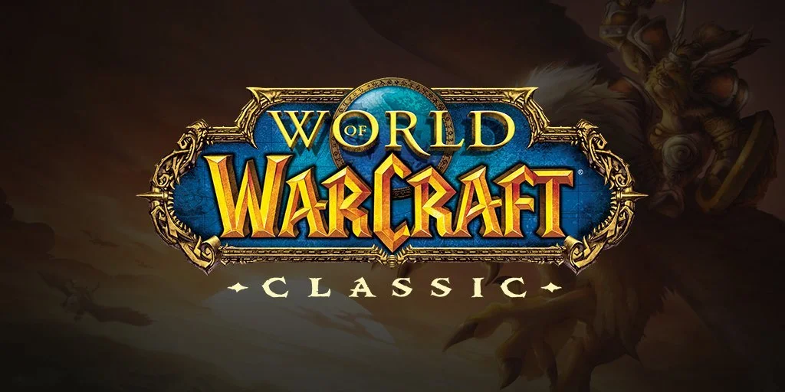
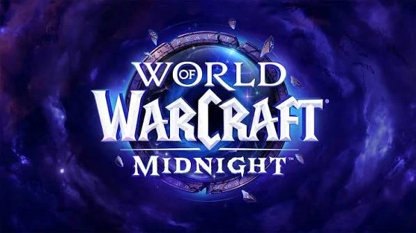
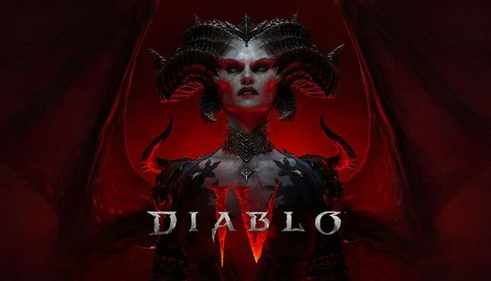
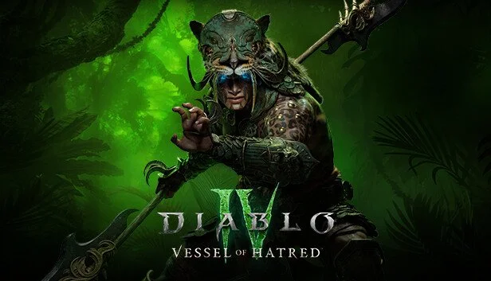
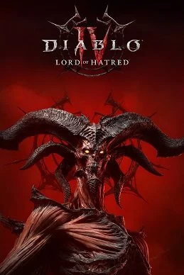
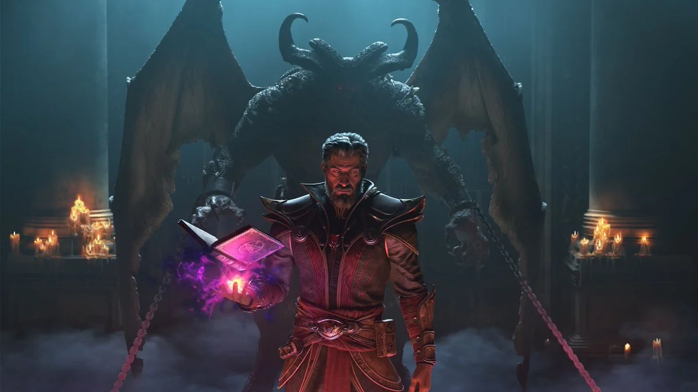

Experience
The games and teams behind my work
A look at the Blizzard games I contributed to across software QA, automation, and technical design, and what I’m building now.
July 2026 – Present · Remote
Lorestone Games
Software Engineer · Independent studio
- Building JUMPSCARE!, a 1–4 player online co-op horror game in Unreal Engine 5, with server-authoritative networking, replication and RPCs.
- Automated functional tests on every change, smoke tests on every build, and network tests under simulated latency and packet loss.
- Test plans and design docs in Confluence, with a severity-based bug workflow in Jira.
October 2022 – July 2026 · Irvine, CA
Blizzard Entertainment
Senior Quality Analyst, Software Test Automation
- Built and maintained a Python and Lua automation framework that ran hundreds of thousands of checks on every nightly build in Jenkins CI/CD, cutting 3–5 hours of manual regression per build.
- Built automated test reporting that gave engineering and production a daily view of build health, cutting failure triage time about 50%.
- Helped establish the live operations QA studio and coordinated QA vendor teams across North America, South America and Asia for 2+ major releases a month plus weekly hotfixes.
- Wrote test plans, runbooks and documentation used across QA teams, and mentored analysts on automation.
World of Warcraft
QA automation, build validation, and release readiness, alongside quest design analysis.

World of Warcraft Classic
QA automation & release quality

World of Warcraft: Midnight
QA automation & release quality
Diablo IV
Software QA and automation across the base game and expansions, working with engineering, design, and production.

Diablo IV
Software QA & automation

Diablo IV: Vessel of Hatred
Software QA & automation

Diablo IV: Lord of Hatred
Software QA & automation

Technical Design Rotation · Diablo IV
–
Worked with the Class Design team to ship 100+ legendary affixes and 10+ player abilities to the live game in 3 months, from concept and scripting through validation and release.
Items & character systems
Created legendary affixes and worked on skills, abilities, and talents, translating design ideas into playable content.
Scripting & implementation
Used Lua and proprietary tooling to implement and validate content, debugging design and tooling constraints with developers and designers.
Cross-functional collaboration
Worked with engineering, design, art, production, and QA, communicating implementation details and constraints and coordinating with stakeholders throughout development.
Education
B.S. in Game Design
Full Sail University
Graduated September 2022
Want the full story?
Request my résumé for a detailed breakdown of my experience and accomplishments.
Request my résumé by email ↗